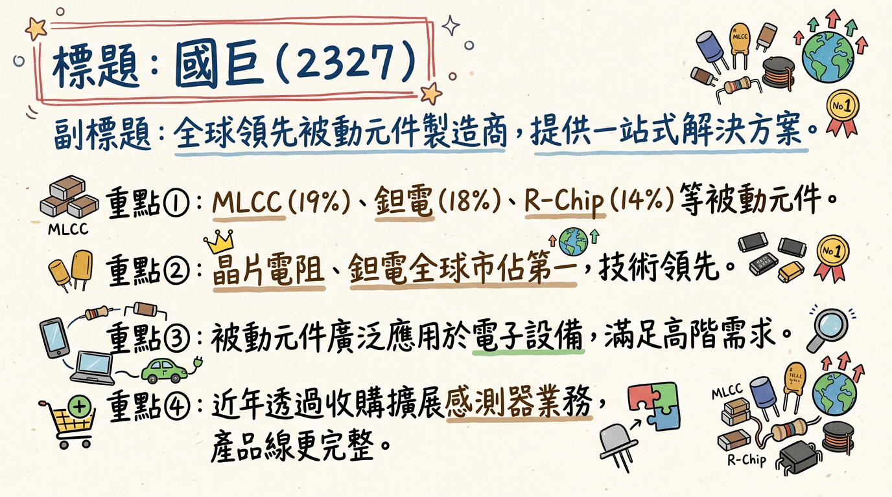
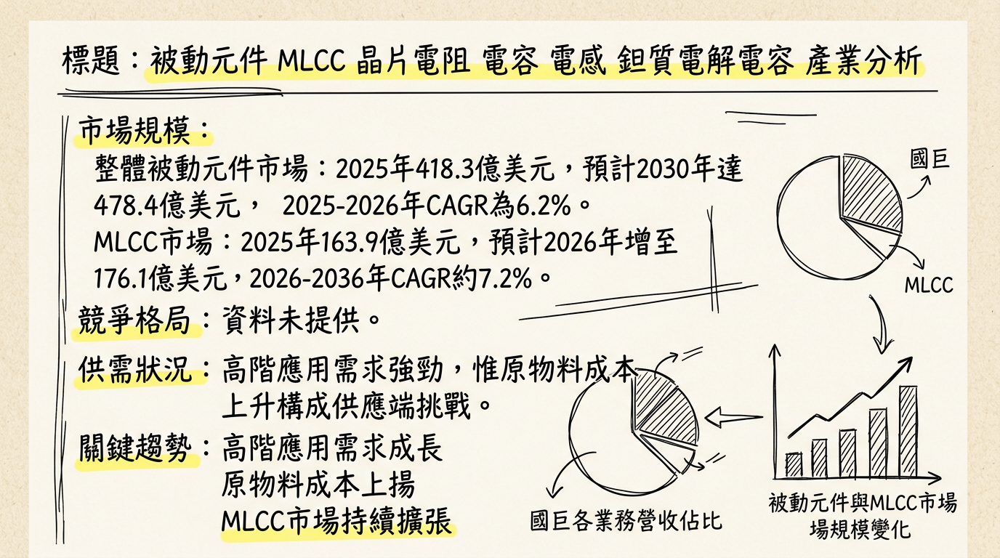
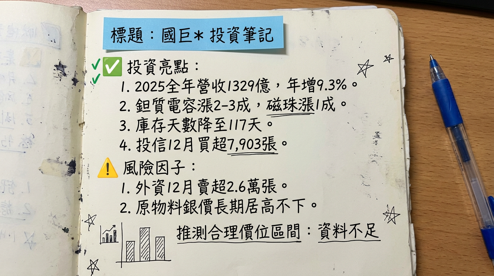

2327 國巨 深度研究報告
一句話摘要
國巨受惠於AI伺服器、車用電子與工業自動化等高階利基型應用需求強勁，憑藉其全球領先的晶片電阻、鉭質電容及整合式被動元件解決方案，成功驅動營收、獲利雙創新高，並透過多次漲價展現定價能力，結合策略性併購效益與產品組合優化，展望2026年成長動能可期，預期AI相關營收佔比將突破兩成。
公司概覽
國巨股份有限公司 (Yageo Corp.) 是一家全球領先的被動元件製造商，致力於提供客戶「一站式被動元件解決方案」。
核心產品線：
- 積層陶瓷電容 (MLCC)：全球市佔率排名第三。
- 晶片電阻 (Chip Resistors, R-Chip)：全球市佔率排名第一。
- 鉭質電容 (Tantalum Capacitors)：全球市佔率排名第一。
- 電感 (Inductors)：全球市佔率排名第三。
- 感測器 (Sensors)：透過收購日本芝浦電子 (NTC熱敏電阻) 及法國施耐德電機的Telemecanique Sensors擴展。
- 其他產品包括高頻天線、電解電容、磁性材料、繼電器和電路保護元件。
製造基地：
國巨在全球擁有9個生產基地、21個銷售辦事處、8個即時物流中心和2個研發中心。蘇州基地產能佔比約70%。台灣高雄大發工業區新廠正逐步量產車用高壓MLCC與工規高階電阻，預計2026年開始貢獻營收。
營收結構：
| 產品組合 (2024年) | 佔比 |
|---|
| 無線與進階電子元件 | 29% |
| 積層陶瓷電容 (MLCC) | 19% |
| 鉭質電容 | 18% |
| 晶片電阻 (R-Chip) | 14% |
| 感測器 | 10% |
| 其他 | 10% |
| 產品營收佔比 (2025年第四季) | 佔比 |
|---|
| 磁性元件 | 26.4% |
| 鉭質電容 | 21.7% |
| 積層陶瓷電容 | 17.7% |
| 晶片電阻 (R-Chip) | 13.6% |
| 感測元件 | 11.2% |
| 主要應用領域 (2024年) | 佔比 |
|---|
| 工業與自動化設備 | 32% |
| 運算及企業系統 | 24% |
| 車用 | 20% |
| 消費性電子 | 12% |
| 電信通訊 | 9% |
| 國防醫藥 | 4% |
核心競爭優勢
全球領導地位與完整產品線： 在晶片電阻、鉭質電容領域居全球第一，MLCC與電感位列全球第三，透過策略性併購提供「一站式被動元件解決方案」，滿足客戶從標準品到高階應用的全面需求。
深耕高階利基市場： 產品應用聚焦於AI/HPC、車用電子、工業控制、5G通訊及國防醫藥等高毛利領域，有效提升獲利能力並降低消費性電子市場波動影響。
強勁的定價能力： 受益於高端產品供需吃緊及原物料成本上漲，國巨於2025年兩度調漲鉭質電容價格，並於2026年1月、2月及4月陸續調漲磁珠、晶片電阻及鉭質電容價格，顯示其在產業鏈中的定價主導權。
策略性併購整合： 透過收購日本芝浦電子與Telemecanique Sensors，強化感測器業務，並藉由KEMET與Pulse補齊高階應用版圖，擴大客戶基礎與市場份額。
進入Nvidia AI伺服器供應鏈： 憑藉高階MLCC、鉭質電容、電感和晶片電阻的技術與產能，成功打入全球最領先的AI伺服器供應鏈，為未來營運注入強勁成長動能。
財務分析
月營收趨勢
| 月份 | 金額 (新台幣億元) | 月增率 MoM | 年增率 YoY |
|---|
| 2026年1月 | 130.30 | 5.5% | 27.13% |
| 2025年12月 | 123.51 | 0.7% | 29.74% |
| 2025年11月 | 122.65 | 8.04% | 22.4% |
| 2025年10月 | 未找到明確數據 | 未找到明確數據 | 未找到明確數據 |
| 2025年9月 | 116.8 | - | 12.15% |
| 2025年8月 | 未找到明確數據 | 未找到明確數據 | 未找到明確數據 |
季度數據 (2025年第四季)
- 季營收：新台幣359.68億元，季增8.7%，年增19.9%。
- 毛利率：37.3%，季增1.1個百分點，年增4.1個百分點。
- 營業利益率：24.3%，季增1.4個百分點，年增6.4個百分點。
- EPS：新台幣3.29元，季增6.2%，年增82.0%。
- 備註：此季度因併購整合產生一次性支出6.5億元，對單季EPS影響約減少0.32元。
年度趨勢
| 年度 | 營收 (新台幣億元) | 年增率 | EPS (新台幣元) | 年增率 |
|---|
| 2024年 (實際) | 1,216.67 | 13.1% | N/A | N/A |
| 2025年 (實際) | 1,329.30 | 9.3% | 11.51 | 22.1% |
| 2026年 (預估) | 1,549 ~ 1,689.9 (券商預估中位數 1,587) | 19.4% (以1,587計算) | 13.68 ~ 18.27 (券商預估中位數 16.1) | 39.9% (以16.1計算) |
法說會重點 (2026年2月25日)
- 營運概況：2025年第四季營收達新台幣359.68億元，稅後純益67.51億元，單季EPS 3.29元。全年營收新台幣1,329.30億元，稅後純益236.34億元，EPS 11.51元。
- 產品線動能：
* 各終端市場BB Ratio（訂單出貨比）均維持在1以上，AI相關需求最為強勁。
* AI伺服器帶動高電容值MLCC與鉭聚合物電容同步增長，具備互補效益。
* 併購芝浦電子後，溫度感測器與熱敏電阻將成為新的成長產品線，特別是在電源、高壓直流電 (HVDC) 應用中。
* 歐洲工業需求已出現復甦訊號，車用市場仍在恢復階段；消費電子需求相對較弱。
* AI相關營收約佔13%。
- 產能利用率：預期2026年第一季高階（Premium）與標準（Standard）產品稼動率都可望較上季增加3-5%。
- 資本支出：2026年資本支出以維護與效率提升為主，暫無大規模產能擴張計畫，因現有產能仍有空間。
- 下季/下半年 Guidance：
* 預期2026年第一季營收可望小幅季增並續創新高，毛利率與營業利益率也可望呈現雙增。
* 公司對2026年展望審慎樂觀，預期AI需求強勁，產品組合持續優化，將為2026年建立更穩固的成長基礎。
* 客戶庫存已達到健康水平，AI相關產品需求持續成長。
券商觀點
目標價整理
| 券商名稱 | 目標價 (新台幣元) | 評等 | 日期 |
|---|
| 摩根大通 (小摩) | 364 | 買進 | 2026年2月26日 |
| 富邦投顧 | 362 | 買進 | 2026年2月26日 |
| 獨立券商旗下投顧 | 360 | 買進 | 2026年1月20日 |
| 滙豐證券 | 351 | 買進 | 2026年2月26日 |
| 野村 | 350 | 買進 | 2026年2月26日 |
| FactSet調查綜合分析師 | 350 (中位數) | 積極樂觀 | 2026年3月3日 |
| 摩根士丹利 (大摩) | 325 | 買進 | 2026年2月26日 |
| 本土法人 | 300 | 買進 | 2026年1月13日 |
| CMoney彙整報告 | 230 ~ 364 | - | 2026年2月26日 |
2025-2026年 EPS 預估
* 法人報告 (2026年3月1日)：新台幣11.51元。
* FactSet調查綜合分析師 (2026年2月24/25日)：中位數新台幣11.45元。
* 本土法人/獨立券商旗下投顧 (2026年1月13/20日)：新台幣11.19元。
* CMoney彙整報告 (2026年2月26日)：約新台幣11.4元。
* 法人報告 (2026年3月1日)：大幅上修至新台幣16.1元。
* FactSet調查綜合分析師 (2026年3月3日)：中位數新台幣15.72元 (最高18.64元，最低13.79元)。
* 本土法人/獨立券商旗下投顧 (2026年1月13/20日)：新台幣13.68元。
* CMoney彙整報告 (2026年2月26日)：新台幣15.27～18.27元。
* 富邦投顧：新台幣15.42元。
* 永豐投顧：新台幣14.72元。
評等異動
FactSet調查顯示，多數分析師對國巨評級偏向積極樂觀，2026年2月26日有11位分析師中9位給予「積極樂觀」評價。有券商在2026年1月20日將國巨的本益比從20倍提升至25倍，顯示對未來獲利能力看法樂觀。
財報深度分析
利潤率趨勢
| 年度/季度 | 毛利率 (%) | 營業利益率 (%) | 稅後淨利率 (%) | 備註 |
|---|
| 2024年Q1 | 33.8 | 17.34 | 16.17 | 累計 |
| 2024年Q2 | 34.5 | 19.03 | 16.81 | 累計 |
| 2024年Q3 | 34.75 | 19.66 | 17.17 | 累計 |
| 2024年Q4 | 34.36 | 19.22 | 16.02 | 全年累計 |
| 2025年Q1 | N/A | N/A | N/A | 未提供 |
| 2025年Q2 | 35.6 | N/A | N/A | 單季 |
| 2025年Q3 | 36.19 | 22.86 | 19.33 | 單季 |
| 2025年Q4 | 37.3 | 24.3 | 18.77 (67.51億/359.68億) | 單季 |
| 2025年全年 | 36.2 | 22.4 | 17.78 (236.34億/1329.3億) | 全年累計 |
- 產品組合優化：受惠於AI相關應用需求強勁，帶動高階產品出貨比重提升，是毛利率與營業利益率持續增長的主要動能。
- 費用控管：2025年Q2獲利穩健亦歸因於有效的費用控管。
- 匯兌影響：2025年Q2受台幣升值影響產生匯損4.15億元；2025年Q4有匯兌損失3.01億元，部分抵銷了淨利息收入。
- 併購整合支出：2025年Q4因併購整合產生一次性支出6.5億元，影響單季EPS約0.32元。
- 價格調漲：自2025年11月起至2026年4月，國巨針對鉭質電容、磁珠、晶片電阻等多項產品進行漲價，有效轉嫁原物料成本壓力並提升獲利空間。
存貨分析
- 2025年Q2法說會提及，公司對於車用與工業市場的需求仍採保守態度，但整體訂單動能穩健，B/B值維持大於1。客戶庫存水位已回到健康區間。
- 2025年12月數據顯示庫存天數從去年同期的132天降至117天，回到110至120天的健康區間。
- 目前未有異常存貨堆積或備料現象。
資本支出
- 2023年：資本支出約新台幣140億元，為新高水位，連續3年站穩百億元以上，主要用於廠區建設（如高雄大發三廠）及高階機器設備支出。
- 2024年：法人推估資本支出仍有機會超過百億元。
- 未來計畫：2026年資本支出以維護與效率提升為主，暫無大規模產能擴張計畫，因現有產能仍有空間。
股權異動
董監事/大股東申報轉讓
| 日期 | 轉讓人 | 受讓人 | 股數 | 轉讓方式 | 目的 |
|---|
| 2025年4月30日 | 法人董事代表人泰銘傳承股份有限公司 | 陳氏傳承股份有限公司 | 6,139,914 | 洽特定人 | 家族傳承，強化持股 |
| 2025年3月3日 | 法人董事代表人本人陳泰銘 | 泰銘傳承股份有限公司籌備處代表人陳泰銘 | 6,139,914 | 洽特定人 | 家族傳承，避免股權分散 |
| 2024年11月29日 | 法人董事代表人陳氏家族股份有限公司 | 陳氏傳承股份有限公司 | 29,214,379 | 洽特定人 | 家族傳承，長期持有 |
| 2024年10月4日 | 董事長陳泰銘 | 陳氏家族股份有限公司籌備處 | 29,214,379 | 洽特定人 | 家族內持股轉換，穩固家族長期持股 |
庫藏股
可轉換公司債 (CB)
- 未找到2024-2026年國巨發行可轉換公司債的最新資訊。
現金增資或減資
- 未找到2024-2026年國巨有現金增資或減資計畫的最新資訊。
- 2025年8月13日：公告進行股票分割，將每股面額由新台幣10元調整為2.5元，即「1拆4」，新股票於2025年8月25日上市。
股利政策 (每股)
| 年度 | 現金股利 (元) | 股票股利 (元) | 除息日/除權日 | 發放日 |
|---|
| 2026 | 6.0 (預計) | - | - | - |
| 2025 | 20.0 | - | 2025年6月13日 | 2025年7月4日 |
| 2024 | 19.9724 | 1.9484 | 2024年6月27日 (現金)/2024年8月15日 (股票) | 2024年7月19日 |
產業分析
產業全球市場規模與成長率
被動元件整體市場預計從2025年的418.3億美元成長至2030年的478.4億美元，2025年至2026年的複合年成長率（CAGR）為6.2%。
主要產品線市場規模及成長率：
| 產品線 | 2025年市場規模 (美元) | 2026年市場規模 (美元) | 2026-2035年CAGR |
|---|
| MLCC (廣義) | 349億 | 396.2億 | 13.52% (至2035) |
| MLCC (狹義) | 163.9億 | 176.1億 | 10.2% (至2036) |
| 小型MLCC | 125.5億 | 137.7億 | 10.81% (至2032) |
| 晶片電阻 | 13.5億 | 14.3億 | 6.5% (至2035) |
| 鉭質電容 (廣義) | 56億 | 58.4億 | 4.28% (至2035) |
| 鉭質電容 (狹義) | 14.1億 | 14.9億 | 5.54% (至2034) |
| 電感 | 84.2億 | 89.1億 | 6.5% (至2035) |
| 整合式被動元件 | 19.2億 | 21.1億 | 9.6% |
供需狀況
2025年底至2026年初，被動元件產業迎來罕見的全面漲價潮，高端被動元件市場供需關係預計將保持緊平衡狀態。
- MLCC：高階MLCC因AI應用需求逆勢爆發，日、韓大廠稼動率維持80%以上並預期訂單續增。中低階MLCC因淡季及原物料成本，台、陸系稼動率控制在60-70%，庫存調節。
- 鉭質電容：AI伺服器全面導入導致需求大幅躍升，擴產門檻極高，全球供應長期偏緊。國巨旗下KEMET已於2026年3月初發出漲價通知，4月1日生效。
- 晶片電阻：國巨及中國大廠風華高科已陸續調漲15-20%，主因貴金屬成本飆漲。
產業平均毛利率水準
被動元件產業毛利率因產品技術與市場而異。高階產品如國巨的利基型產品毛利率表現優異，中國大陸廠商風華高科2024年綜合毛利率為19.17%，順絡電子(電感)則維持在30%左右。
競爭格局
全球前 5 大公司及其市佔率
2024年全球MLCC市場份額
| 排名 | 公司名稱 | 市佔率 |
|---|
| 1 | 村田製作所 | 31.8% |
| 2 | 三星電機 | 22.9% |
| 3 | 太陽誘電 | 11.2% |
| 4 | TDK | 5.9% |
| 5 | 京瓷 | 5.5% |
- 國巨旗下KEMET在全球鉭質電容市場份額已超過50%。
- 主要廠商包括Vishay Intertechnology、KEMET（國巨）、京瓷AVX元件、Panasonic等。美系廠商AVX、Vishay與基美合計掌握全球約60%至70%市占率。
晶片電阻
- 國巨在全球晶片電阻領域為龍頭。
- 主要廠商包括國巨、華新科技、KOA Corporation、ROHM Co., Ltd.等。
電感
- 國巨在電感器和車規級磁件領域為全球第三大。
- 主要廠商包括Coilcraft, Inc.、Bourns, Inc.、Wurth Elektronik GmbH & Co. KG、村田製作所等。
國巨 vs 主要競爭對手的具體比較 (以MLCC領域為例)
| 特性/公司 | 國巨 | 村田、三星電機、太陽誘電 (日韓大廠) |
|---|
| 技術 | - 「一站式被動元件解決方案」 | - 高階MLCC技術領先，小型化、高容量、高頻特性卓越 |
| - 高容值、低ESR、高精度電阻持續提升 | - 掌握AI、車用等高階應用關鍵料源 |
| 產能 | - 鉭質電容、晶片電阻產能利用率高，有漲價行動 | - 高階MLCC稼動率80%以上，產能滿載 |
| - 中低階MLCC稼動率60-70%，庫存調節 | - 三星電機評估MLCC漲價 |
| 客戶 | - AI伺服器、圖形顯示卡、車用、工業、電信通訊 | - AI伺服器、Apple新機、CSP大廠ASIC備貨 |
| - 已打入輝達（Nvidia）AI伺服器供應鏈 | |
| 價格 | - 已調漲鉭質電容、晶片電阻、磁珠，展現定價力 | - 高階MLCC需求爆發，產能滿載，紛紛上修財測 |
台灣同業比較
台灣被動元件廠普遍受惠於AI相關需求。國巨因產品線完整且全球市占領先，在漲價潮中具「全產品受惠」優勢。華新科AI相關營收約佔10%，預計2026年有望倍增。立隆電、蜜望實(太陽誘電代理商)等業者亦因AI伺服器需求強勁，業績表現亮眼。
產業趨勢
高階化、小型化與高容量需求：
* 趨勢：AI伺服器、5G通訊、電動車等驅動元件朝更小尺寸 (如01005 MLCC)、更高容量、更高電壓、更高可靠度與更低ESR發展。
* 影響：市場呈現兩極化，高階產品需求爆發，要求廠商投入更多研發於先進材料與製程技術。
高頻與高功率應用：
* 趨勢：AI伺服器、5G通訊、電動車、HPC系統對高頻濾波、電源穩定、大功率/高電流被動元件需求極高。
* 影響：需要具備卓越高頻特性、低ESR、高可靠度且能承受大功率的元件，帶動鉭質電容、高功率電感及高精度晶片電阻需求。
整合式被動元件 (IPD) 發展：
* 趨勢：為應對設備微型化與高功能性，將多個被動元件整合至單一封裝。
* 影響：IPD在5G通訊、射頻模組、IoT裝置中關鍵，有助於減少空間、提高效能、簡化設計。
對 國巨 的具體機會和威脅
機會：
- AI/HPC強勁需求：AI伺服器對高階被動元件需求呈倍數成長，國巨產品線完整且為領導者，將是最大受益者。AI相關營收貢獻有望突破150億元。
- 車用電子與工業應用擴張：電動車、ADAS、工業自動化對高可靠度、高性能元件需求穩健，國巨透過併購擴展感測器業務，並強化車用佈局。
- 產品線整合優勢：提供「一站式解決方案」策略，深化客戶合作關係。
- 定價能力提升：高端產品供需吃緊及原物料成本壓力下，國巨成功對多項產品漲價，有助維持毛利率。
威脅：
- 原物料價格波動：貴金屬價格飆漲直接墊高製造成本，雖已轉嫁，但仍需持續關注。
- 中低階產品競爭加劇：消費性電子需求疲弱，中低階產品市場競爭激烈，價格承壓。
- 地緣政治風險：供應鏈重組、貿易關稅及匯率波動可能影響營運。
- 主要競爭者技術領先：日韓大廠在特定高階MLCC技術仍具優勢。
相關投資題材的具體連結
* AI伺服器對高階被動元件（鉭質電容、高階MLCC、晶片電阻）用量是傳統伺服器的2~3倍。NVIDIA GB200/300伺服器機櫃甚至高達45萬顆MLCC，規格嚴苛。
* 國巨因產品線及高階市場佈局，在AI伺服器、HPC領域受益最大，AI相關營收佔比持續提升。
* HBM雖非被動元件，但其激增需求帶動電源管理與信號傳輸相關的高階被動元件需求，以確保系統穩定高效。
- 電動車 (EV) 與 ADAS (先進駕駛輔助系統)：
* 電動車普及和ADAS複雜化，大幅增加車載電子元件數量和可靠性要求，推動車規級MLCC、鉭質電容、晶片電阻和感測器需求。國巨積極搶佔此市場。
* 5G基礎設施與手機對被動元件在高頻特性、小型化、低功耗等方面提出更高要求，MLCC、晶片電阻及整合式被動元件扮演關鍵角色。
近期催化劑
利多事件清單
- 2025年11月：二度調漲鉭質電容T520、T521、T530系列價格，漲幅二至三成。
- 2025年12月：11月營收新台幣122.65億元，月增8.04%、年增22.4%，創歷史單月新高。庫存天數降至117天健康區間。
- 2026年1月1日：磁珠產品（公制尺寸1608以上）實施價格調整，漲幅約一成，主因銀價長期居高不下。
- 2026年1月9日：12月營收新台幣123.51億元，年增29.7%，連續第二個月創單月歷史新高。2025全年營收新台幣1,329.3億元，創歷史新高。2025年第四季營收新台幣359.68億元，創歷年單季新高。
- 2026年1月13日：本土券商給予目標價300元，看好「漲價」及「新品」主旋律。
- 2026年1月18日：發出漲價通知，2月起調漲RC0402、RC0603、RC0805、RC1206等多項主流電阻產品價格，漲幅15-20%，因貴金屬成本飆漲。
- 2026年1月20日：獨立券商旗下投顧將目標價從300元拉升至360元，看好定價能力、日本大廠訂單外溢及資料中心需求。
- 2026年2月23日：因日、韓大廠醞釀MLCC漲價題材，股價攻上漲停281.5元。
- 2026年2月25日：法說會公布2025年Q4稅後純益季增6.2%、年增82.1%，全年EPS 11.51元，並預期2026年Q1營收、毛利率與營業利益率將續創新高。
- 2026年2月26日：多家券商上調國巨目標價，摩根大通給予最高364元。
- 2026年3月1日：法人將2026年EPS大幅上修至16.1元，預估營收挑戰1,587億元。再度向客戶發出鉭質電容漲價通知，新價格4月1日生效。
- 近期法人買超：3月2日外資買超4,918張，投信3月3日買超442張、3月4日買超1,098張。
利空事件清單
- 2025年12月中旬：外資累計賣超2.6萬張，主要集中在美國聯準會公布鷹派利率決策後的調節賣壓。
- 2025年Q4：併購整合產生一次性支出6.5億元，對單季EPS影響約減少0.32元。
- 2026年3月2日-3日：FactSet最新調查，共14-15位分析師對國巨2026年EPS預估中位數由16.18元下修至15.72元。
- 近期法人賣超：3月3日外資賣超6,719張，3月4日外資賣超5,089張。
⭐ 成長動能時間軸
| 時間 | 類別 | 詳細描述 |
|---|
| 2024年1月 | 新市場 | 完成收購Telemecanique Sensors 100%股權，進一步強化感測器業務。 |
| 2025年10月21日 | 新市場 | 完成對日本芝浦電子株式會社的公開收購 (接受率達87.3%)，預計2026年第一季完全納入旗下子公司，擴展NTC熱敏電阻業務，應用於汽車、消費性電子及工業領域。 |
| 2025年11月 | 需求/價格 | 二度調漲鉭質電容價格，T520、T521、T530系列漲幅二至三成，顯示AI伺服器對高階鉭質電容需求強勁。 |
| 2025年12月 | 需求 | AI伺服器與資料中心成為國巨營收成長重要支柱，客戶庫存天數從132天降至117天健康區間。 |
| 2026年1月1日 | 價格 | 旗下普思（PULSE）針對公制尺寸1608以上磁珠產品實施價格調整，業界推估漲幅約一成，主因關鍵原物料銀價長期居高不下。 |
| 2026年1月 | 新客戶/市場 | 積極送樣高壓高容MLCC、功率電感及耐大電流磁珠等新品給GPU伺服器大廠，隨著其採用HVDC，可望成功打入供應鏈，下半年出現新營收動能。 |
| 2026年2月1日 | 價格 | 正式對客戶發出漲價通知，調漲RC0402、RC0603、RC0805、RC1206等多項主流電阻產品價格15-20%，主因白銀、釕、鈀等貴金屬價格飆漲。 |
| 2026年Q1 (預計) | 擴廠/產能 | 台灣高雄大發工業區新廠將逐步量產車用高壓MLCC與工規高階電阻，預計2026年將開始貢獻集團營收。 |
| 2026年Q1 (預計) | 產能 | 高階（Premium）與標準（Standard）產品稼動率都可望較上季增加3-5%。公司將進一步提升特殊品稼動率至85%的水準，以支應高端與利基應用需求。 |
| 2026年Q1 (預計) | 新市場 | 併購芝浦電子的整合效益開始顯現，提升感測器產品佔比，促進汽車、消費性電子及工業等終端應用領域的營收成長。 |
| 226年4月1日 | 價格 | 國巨旗下KEMET再度向客戶發出漲價通知，部分鉭質電容料號（T523系列）將調整價格，主要因聚合物鉭電容需求大幅躍升及成本攀升。 |
| 2026年全年 | 需求 | AI伺服器對MLCC、鉭質電容等被動元件的需求量與規格要求持續提升，且需求密度遠勝一般PC，具有結構性成長潛力。村田製作所預估AI資本支出熱潮至少持續三年。AI相關產品營收占比預計將從2025年的10-12%躍升至20%。 |
| 2026年全年 | 產品組合 | 高階產品比重提升，超過75%的營收來自「利基型產品」，使得獲利能力不再完全受制於消費電子景氣榮枯。 |
2026 展望
成長動能：
AI/HPC需求爆發： AI伺服器為最主要成長引擎，單機被動元件用量為傳統伺服器的數倍。國巨在AI伺服器供應鏈中的高階MLCC、鉭質電容、晶片電阻和電感產品需求持續強勁，預期AI相關產品營收貢獻在2026年有望突破兩成。
產品組合持續優化： 高階利基型產品佔比提升至75%以上，降低受消費電子景氣波動影響，並帶動整體毛利率與營業利益率提升。
併購整合效益顯現： 芝浦電子和Telemecanique Sensors的併入，擴大了感測器產品線，強化車用、工業及特定利基市場佈局，貢獻新的營收增長。
漲價循環與定價能力： 2025年底至2026年以來多次成功調漲鉭質電容、磁珠、晶片電阻價格，顯示國巨具備強勁的成本轉嫁能力與市場定價權，將持續支撐獲利能力。
車用與工控市場復甦： 電動車與先進駕駛輔助系統（ADAS）滲透率提升，加上歐洲工控市場復甦跡象，將持續推動對高可靠度、高規格被動元件的需求。
日本大廠訂單外溢： 村田製作所等日系大廠高階MLCC稼動率接近滿載，可能產生訂單外溢效應，使國巨等台廠受惠。
風險：
全球經濟放緩：若全球經濟成長不如預期，可能拖累國巨約25%的標準品業務需求，抵銷高階產品的部分成長。
匯率波動：被動元件產業對匯率敏感，儘管強勢美元有利於財報，但匯率反轉恐侵蝕獲利。
原物料價格波動：貴金屬（銀、釕、鈀）價格持續飆漲，雖已成功轉嫁，未來仍考驗成本控制與轉嫁能力。
地緣政治不確定性：國際貿易政策、關稅變化及地緣政治緊張，可能影響供應鏈穩定性與市場佈局。
中低階市場競爭：消費性電子需求疲弱，中低階產品市場仍面臨競爭壓力，稼動率與價格可能承壓。
估值風險：部分法人認為國巨本益比已達20倍，高於過去未有缺料漲價時的15倍區間上緣，股價可能面臨估值修正壓力。
投資結論
AI與高階應用為核心成長引擎： 國巨憑藉其在AI伺服器及HPC領域的深厚佈局，特別是高階MLCC、鉭質電容及晶片電阻的領先地位，將成為此波AI產業趨勢的最大受益者。2026年AI相關營收佔比預計將提升至20%，為公司營收與獲利帶來結構性成長。
產品組合優化與定價能力提升盈利質量： 公司持續聚焦利基型高毛利產品，並在原物料成本壓力下成功多次調漲產品價格，展現了卓越的定價能力。這使得國巨的獲利能力不再完全受制於傳統消費性電子景氣，盈利質量顯著提升。
穩健的財務體質與策略性併購效益： 國巨庫存水位已回歸健康，財務槓桿穩健。透過對芝浦電子及Telemecanique Sensors的併購，不僅拓寬了產品線（感測器），也強化了在車用與工業等高成長市場的地位，預期併購整合效益將在2026年進一步顯現。
儘管有宏觀與估值壓力，但長期動能不變： 雖然全球經濟放緩、匯率波動及部分市場估值已達相對高點，可能帶來短期股價震盪，但國巨深耕高階市場、具備完整產品線及定價權的護城河，使其在被動元件產業中具備長期競爭優勢。
目標價區間建議： 綜合券商預估、公司成長動能與產業前景，考量其在全球被動元件高階市場的領導地位及AI趨勢帶來的長期增長潛力，給予國巨 新台幣350元至380元 的目標價區間建議。此區間反映了公司在AI應用、產品組合優化和定價能力上的優勢，同時考量了市場估值與宏觀經濟潛在風險。
本報告由 AI 自動產生，資料來源為公開網路資訊，僅供參考，不構成投資建議。產生時間：2026-03-06 09:36
📊 資訊卡


